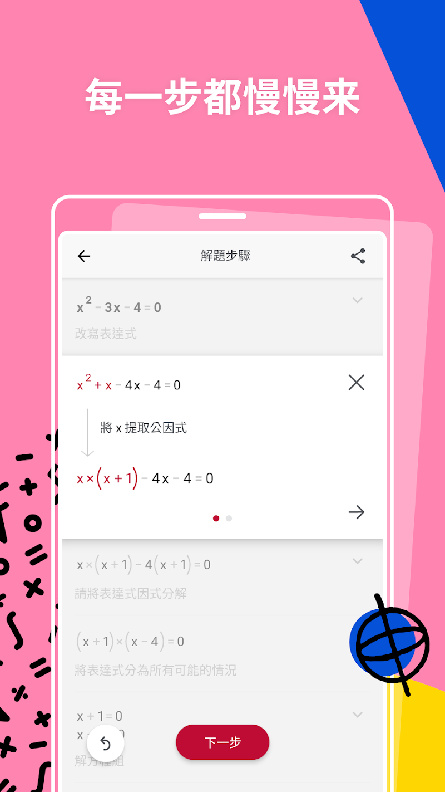

用 Maple 把作业检查到考前刷题串成一条链——我每周是这么干的
每周数学作业批改 + 考前刷题是两个让我头疼的环节，以前靠拍照解题查答案、靠错题本记错步、靠手算补同类题。这篇讲我怎么把 Maple 嵌进这条流程，让查错、重练、错题归档三步连起来。
我每周要做两件事：给儿子批数学作业、陪他考前刷题。以前这是三步：用拍照解题 App 查答案、拿红笔标错步、翻课本找同类题让他重做——三步之间全是手动衔接，经常红笔标完错步就忘了让他补练，或者补练的题和原题差太远、错因根本没覆盖。
现在这条链变成了一条：写作业 → Maple 查过程 → 一键换同类型重练 → 错题自动归档。中间少了两次手动复制，也不用我自己出同类题。这篇讲具体怎么接。
旧流程卡在哪
先说旧流程的三个断点：
第一个断点：拍照解题只给标准答案，不管你自己写的过程对不对。 儿子算一道积分题，答案对了但中间某步符号抄错，拍照解题 App 返回"正确"，这步扣分的错就漏掉了。反过来，如果他答案错了，App 给一份"标准过程"，他从头抄一遍，还是不知道自己原来错在哪一行。
第二个断点：错步找到了，但同类题要自己找。 翻课本、翻笔记本，有时找十分钟还没找到一道同类型的。刚暴露的错因趁着热乎劲补练效果最好，十分钟过去那个劲就散了。
第三个断点：错题归档靠手抄。 把错步抄进错题本，标记错因类型——符号错误、公式记错、步骤跳太多——下周翻的时候，得从一堆手抄记录里重新定位是哪道题、错在哪。
三个断点加起来，每周这两件事要花我一个多小时。
新流程怎么把 Maple 插进去
Maple官网上定义它是一款手写+拍照输入的数学计算器，4.2 版加了 Check My Work（检查我的作业），4.3 版又加了 Try Another（换题再练）。这两个功能正好把旧流程的第一个和第二个断点填上了。
整条链长这样：
儿子纸笔写完整解题过程
↓
Maple 拍整页过程（不是只拍题目）
↓
Check My Work 逐行标注对/错，定位第一次错的那行
↓
展开分步解题，让他自己找到断点在哪
↓
点 Try Another 换一道同类型题，马上再来一道
↓
连对三道换下一个知识点衔接点 1：拍整页过程，不是只拍题目。 这是 Check My Work 和普通拍照解题的本质区别——普通拍照解题只给"这道题怎么做"，Check My Work 给"你做的这份过程，哪一步开始错的"。Maple 专门优化过对潦草手写的识别，儿子那种连笔式字迹也能认出来。
衔接点 2：错步定位后立刻换题。 Try Another 在结果页和编辑器里都有入口，刚找到断点马上点，Maple 换一道同类型的题（4.3.1 起已经覆盖微分和积分）。这一步的关键是时机——错因刚暴露、注意力还在的时候，重练的记忆效果最好。
衔接点 3：错题归档。 这一步 Maple 没直接解决，我用了个笨办法但够用：把 Check My Work 标注过的那页过程拍下来存进一个专门的相册，文件名带错因类型（比如"积分-符号抄错"）。下周翻的时候按文件名搜就行，比手抄快。

流程里最容易断链的两个环节
这条链跑了四周，有两个地方经常出错，写出来省得你踩坑。
第一个断链点：相机权限被拒。 第一次打开 App 时系统弹窗如果点了"不允许"，拍照界面直接黑屏——这是"拍照功能坏了"投诉里的头号原因，功能没坏，是权限关了。iOS 走设置 → 隐私与安全性 → 相机 → 开 Maple；安卓走应用管理 → 权限管理 → 允许相机。手写面板和数学键盘两条输入路线不依赖相机，权限暂时给不了的场景可以先用这两条顶上，学习不中断。
第二个断链点：Try Another 的同类题类型覆盖。 上线时只覆盖常见代数题，4.3.1 才扩展到微分和积分，最新支持范围要翻 Maple文档 里的版本演进。如果儿子练的是三角恒等变换，Try Another 换出来的题可能不太对路。这时候我会手动换题——但至少比自己翻课本找快，因为 Maple 至少能告诉我"这道题对/错、错在哪步"，我只需要换一道同类型的新题拍进去。
另外提一下版本节奏。Maple 大约每季度一版，4.0 之前没有计算历史，4.2 才有 Check My Work，4.3 才有 Try Another。如果你的安装包版本在 4.0.1 左右，那 Maple下载 这份适合作为离线安装来源，但完整功能要跟商店更新。
效果与边界
跑了四周之后，每周批作业加陪刷题的时间从一个多小时降到了四十分钟左右——少了两次手动复制（红笔标错步 → 找同类题 → 抄进错题本），也不用我自己出同类题。
但这套流程也有边界：
第一，Check My Work 只认手写过程。 如果儿子是在草稿纸上乱涂几笔、跳了很多步骤，它也会报错——但这其实是好事，逼着他写完整过程。
第二，Try Another 的题型覆盖在增长中。 目前对大学微积分支持不错，但高中部分题型覆盖还不全。如果碰到这种情况，手动换题顶上，别等功能完善。
第三，免费版有次数限制。 换题本身免费，但展开新题的完整分步过程受免费版次数限制。如果练得勤，可能要 Premium——这部分自己决定。
这套流程能不能直接抄走？如果你的场景是"给孩子批数学作业 + 陪刷题"，基本可以。如果是大学生自己练、或者练的是物理化学，输入方式和查错逻辑类似，但题型覆盖和联动能力要按具体科目调整。
整体来说，这条链最值钱的地方是：它把"我会了吗"这个模糊的问题，变成了"逐行查错 → 立刻重练 → 连对三道"这个可量化的闭环。以前儿子说"我懂了"我还得半信半疑，现在有 Check My Work 标注过的错步和 Try Another 连对三道的记录，我心里有数。
写这篇的时候参考了几个版本的功能演进和操作细节，整理下来方便以后查：GitHub 上有完整版本记录，国内访问不顺的话可以切到 Gitee 或 GitCode 拿同一份资料，三个仓库的内容保持同步。